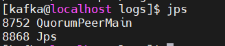
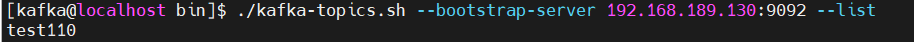
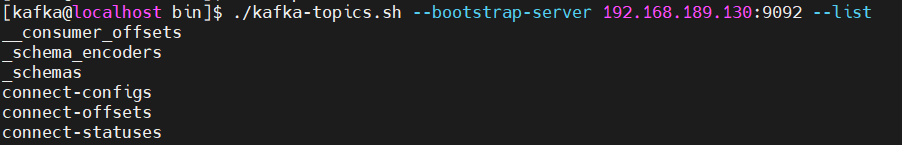

Debezium+Kafka 实时同步 Oracle 11g 数据到 DolphinDB
教程难度
- 高级
面向读者
前言
随着越来越多的用户使用 DolphinDB，各种不同的应用的场景也对 DolphinDB 的数据接入提出了不同的要求。部分用户需要将 Oracle 11g 的数据实时同步到 DolphinDB 中来，以满足在 DolphinDB 中使用数据的实时性需求。本篇教程将介绍使用 Debezium 来实时捕获和发布 Oracle 11g 的数据库更改事件，并完成 Oracle 到 DolphinDB 的实时数据同步的完整的解决方案。
1. Debezium 同步方案概述
Debezium 是一个开源的分布式平台，用于实时捕获和发布数据库更改事件。它可以将关系型数据库（如MySQL、PostgreSQL、Oracle 等）的变更事件转化为可观察的流数据，以供其他应用程序实时消费和处理。本文中将采用 Debezium 与 Kafka 组合的方式来实现从 Oracle11g 到 DolphinDB 的数据同步。
Kafka +Debezium 的数据同步方案需要部署 4 个服务，如下所示：
- ZooKeeper：kafka 的依赖部署。
- Kafka：数据存储。
- Kafka-Connect：用于接入数据插件 source-connetor, sink-connector 的框架，可以提供高可用，也可以部署单实例版本。
- Schema-Registry ：提供实时同步的数据的元数据注册功能 ，支持数据序列化。
基于 Debezium 的数据架构图如下：
Debezium+Kafka 实时同步 Oracle 11g 数据到 DolphinDB 架构图
接下来，本文将逐一介绍这些服务的下载、安装，以及配置数据同步任务。
2. 部署 Kafka 单实例实时数据存储
为方便用户快速复现教程内容，本文将采用 Kafka 单实例服务部署方案以介绍数据同步功能。部署环境我们采用 Linux 环境。
2.1 部署准备
首先下载程序包，Zookeeper（开源）, Kafka （开源）, Confluent （社区版）建议到到官网下载最新稳定版本。
并将下面 4 个软件包放到 /opt 目录下。（软件、配置、数据路径文件较多。注意：初次试用请尽量保持路径一致。）
- jdk-17.0.7_linux-x64_bin.tar.gz
https://download.oracle.com/java/17/latest/jdk-17_linux-x64_bin.tar.gz
- apache-zookeeper-3.7.1-bin.tar.gz
- kafka_2.13-3.4.1.tgz (下载scala 2.13版本)
- confluent-community-7.4.0.tar.gz
https://www.confluent.io/installation/
Confluent 是 Kafka 相关的商业公司。下载 Confluent 时选择 self-managed，然后录入信息，再点击 start free 后方能下载。注意，下载 community 版本即可满足需要，本教程只需要其中的 schema-registry 包。如需使用更多功能，也可下载正式版。正式版包括了 Zookeeper 、Kafka 以及管理、监控 Kafka 的更多功能。
下载完以上 4 个程序包后，即可开始部署。
2.2 部署 Zookeeper
2.2.1 基础准备
第一步：创建部署用户
创建用户 kafka，授予 sudo 免密权限（需自行设置）。然后切换到 kafka 用户来进行操作（以下均为 kafka 用户操作）。
useradd kafka
su kafka第二步：安装部署 Java 环境
由于整套架构涉及的程序都是基于 java 虚拟机运行的。所以必须安装 java 运行环境。
安装 Java 到路径 /opt/java17。
cd /opt
sudo mkdir -p /usr/local/java
sudo tar -xvf jdk-17.0.7_linux-x64_bin.tar.gz
sudo mv jdk-17.0.7 /usr/local/java/java17设置 Java 环境变量 (kafka 用户下执行)。
vim ~/.bashrc
# 输入下面代码
JAVA_HOME=/usr/local/java/java17
PATH=$JAVA_HOME/bin:$PATH
export JAVA_HOME PATH
source ~/.bashrc
java --version2.2.2 安装 Zookeeper
第一步：解压并安装 Zookeeper
由于 3.7.1 版本 Zookeeper 的用户、组具有默认值，故此处根据实际情况进行调整。
cd /opt
sudo tar -xvf apache-zookeeper-3.7.1-bin.tar.gz
sudo mv apache-zookeeper-3.7.1-bin zookeeper
sudo chown -R root:root zookeeper
sudo chmod -R 755 zookeeper第二步： 准备 Zookeeper 的配置文件和存储文件
创建 Zookeeper 的配置文件、数据文件、日志文件的存储路径。建议保持路径一致。相关的程序配置文件包请参见附录
sudo mkdir -p /KFDATA/zookeeper/etc
sudo mkdir -p /KFDATA/zookeeper/data
sudo mkdir -p /KFDATA/zookeeper/datalog
sudo mkdir -p /KFDATA/zookeeper/logs
sudo chown -R kafka:kafka /KFDATA
chmod -R 700 /KFDATA/zookeeper准备 Zookeeper 的配置文件 zoo.cfg。先从 zookeeper 安装路径下复制 *log4j.properties *过来，然后进行修改。
说明：Zookeeper 的不同版本 log4j.properties 配置内容会略有区别。如有不同，请按 log4j 的规则调整。
cd /KFDATA/zookeeper/etc
touch zoo.cfg
echo tickTime=2000 > zoo.cfg
echo initLimit=10 >>zoo.cfg
echo syncLimit=5 >>zoo.cfg
echo dataDir=/KFDATA/zookeeper/data >>zoo.cfg
echo dataLogDir=/KFDATA/zookeeper/datalog >>zoo.cfg
echo clientPort=2181 >>zoo.cfg
sudo cp /opt/zookeeper/conf/log4j.properties ./
sudo chown kafka:kafka ./log4j.properties修改 log4j.properties 中的 zookeeper.log.dir 参数 ：

第三步：创建 Zookeeper 的启动文件
创建一个 zk.env，配置 Zookeeper 启动所需环境变量，用于启动 service 文件调用。
cd /KFDATA/zookeeper/etc/
touch zk.env
echo JAVA_HOME=/usr/local/java/java17 > zk.env
echo PATH="/usr/local/java/java17/bin:/opt/zookeeper/bin:/usr/local/bin:/bin:/usr/bin:/usr/local/sbin:/usr/sbin" >> zk.env
echo ZOO_LOG_DIR=/KFDATA/zookeeper/logs >> zk.env
echo ZOO_LOG4J_OPTS=\"-Dlog4j.configuration=file:/KFDATA/zookeeper/etc/log4j.properties\" >> zk.env如果对 Zookeeper 很熟练可以自行调用 Zookeeper 安装目录下的 bin 文件夹下的操作脚本来进行操作或测试。
使用 vim 命令编辑一个 service 文件。
sudo vim /usr/lib/systemd/system/zookeeper.service录入以下启动命令信息并保存。
[Unit]
Description=Apache Kafka - ZooKeeper
After=network.target
[Service]
Type=forking
User=kafka
Group=kafka
EnvironmentFile=/KFDATA/zookeeper/etc/zk.env
ExecStart=/opt/zookeeper/bin/zkServer.sh start /KFDATA/zookeeper/etc/zoo.cfg
ExecStop=/opt/zookeeper/bin/zkServer.sh stop /KFDATA/zookeeper/etc/zoo.cfg
TimeoutStopSec=180
Restart=no
[Install]
WantedBy=multi-user.target
重新加载 service 启动服务。
sudo systemctl daemon-reload第四步：创建测试脚本
（1）创建连接 Zookeeper 测试文件 zkCon.sh。
mkdir -p /KFDATA/bin
cd /KFDATA/bin
touch zkCon.sh
echo export JAVA_HOME=/usr/local/java/java17 >zkCon.sh
echo export PATH="{$JAVE_HOME}/bin:/opt/zookeeper/bin:/usr/local/bin:/bin:/usr/bin:/usr/local/sbin:/usr/sbin" >>zkCon.sh
echo export ZOO_LOG_DIR=/KFDATA/zookeeper/logs >>zkCon.sh
echo export ZOO_LOG4J_OPTS=\"-Dlog4j.configuration=file:/KFDATA/zookeeper/etc/log4j.properties\" >>zkCon.sh
echo '/opt/zookeeper/bin/zkCli.sh -server localhost:2181 -Dzookeeper.config.path=/KFDATA/zookeeper/zoo.cfg' >>zkCon.sh对脚本授予执行权限。
chmod +x zkCon.sh 2.2.3 部署启动 Zookeeper
第一步：通过 systemctl 工具启动 Zookeeper 服务
sudo systemctl start zookeeper.service第二步：查看 Zookeeper 启动情况
可以通过 jps 命令查看 Java 进程， QuorumPeerMain 进程是 Zookeeper 的启动进程。

也可以通过 systemctl 命令查看，如图即是正常启动。
sudo systemctl status zookeeper
第三步：通过客户端连接 Zookeeper ，并进行查看
cd /KFDATA/bin/
./zkCon.sh
# 等待zookeeper 命令行窗口
ls /
ls /zookeeper 如果返回如下显示，表示 Zookeeper 启动成功，可以在 Zookeeper 中观察到自身的基础信息。

ctrl +c 可以退出 Zookeeper 客户端连接。
2.3 部署 Kafka
2.3.1 安装 Kafka
第一步：解压安装 Kafka 文件
执行以下命令，修改一下 Kafka 的安装文件名。
cd /opt
sudo tar -xvf kafka_2.13-3.4.1.tgz
sudo mv kafka_2.13-3.4.1 kafka第二步：准备 Kafka 的配置文件和存储文件
创建 Kafka 的配置文件、数据文件、日志文件的存储路径。
mkdir -p /KFDATA/kafka/etc
mkdir -p /KFDATA/kafka/data
mkdir -p /KFDATA/kafka/logs准备 Kafka 相关配置文件，创建启动配置文件，和日志配置文件。
cd /KFDATA/kafka/etc
touch kafka-server.properties
cp /opt/kafka/config/log4j.properties ./
cp /opt/kafka/config/tools-log4j.properties ./修改 kafka-server.properties 文件中的配置，修改内容如下。
############################# Server Basics #############################
broker.id=1
############################# Socket Server Settings #############################
listeners=PLAINTEXT://0.0.0.0:9092
advertised.listeners=PLAINTEXT://192.168.189.130:9092
num.network.threads=3
num.io.threads=8
socket.send.buffer.bytes=102400
socket.receive.buffer.bytes=102400
socket.request.max.bytes=104857600
############################# Log Basics #############################
log.dirs=/KFDATA/kafka/data
num.partitions=1
num.recovery.threads.per.data.dir=1
############################# Internal Topic Settings #############################
offsets.topic.replication.factor=1
transaction.state.log.replication.factor=1
transaction.state.log.min.isr=1
############################# Log Retention Policy #############################
log.retention.hours=-1
log.retention.bytes=21474836480
log.segment.bytes=1073741824
log.retention.check.interval.ms=300000
auto.create.topics.enable=true
############################# Zookeeper #############################
zookeeper.connect=192.168.189.130:2181
# Timeout in ms for connecting to zookeeper
zookeeper.connection.timeout.ms=12000
############################# Group Coordinator Settings #############################
group.initial.rebalance.delay.ms=0
############################# message Settings #############################
message.max.byte=5242880其中以下两项需要视具体环境修改，advertise.listeners 是对外监听端口。
advertised.listeners=PLAINTEXT://192.168.189.130:9092
zookeeper.connect=192.168.189.130:2181第三步：准备 Kafka 的启动文件
创建 Kafka 启动的环境变量文件, 这里配置了开启 JMX 监控端口，如果不需要，可以忽略后两项配置。
JMX 端口的作用是可以通过此端口连接，获取一些监控指标。
cd /KFDATA/kafka/etc
touch kf-server.env
echo PATH="/usr/local/java/java17/bin:/opt/zookeeper/bin:/opt/kafka:/usr/local/bin:/bin:/usr/bin:/usr/local/sbin:/usr/sbin" >>kf-server.env
echo LOG_DIR="/KFDATA/kafka/logs/" >>kf-server.env
echo KAFKA_LOG4J_OPTS=\"-Dlog4j.configuration=file:/KFDATA/kafka/etc/log4j.properties\" >>kf-server.env
echo KAFKA_JMX_OPTS=\"-Dcom.sun.management.jmxremote=true -Dcom.sun.management.jmxremote.authenticate=false -Dcom.sun.management.jmxremote.ssl=false -Djava.rmi.server.hostname=192.168.189.130 -Djava.net.preferIPv4Stack=true\" >>kf-server.env
echo JMX_PORT=29999 >>kf-server.env创建 Kafka 的 systemd service 文件，通过 vim 命令打开一个文件。
sudo vim /usr/lib/systemd/system/kafka-server.service录入以下内容并保存。
[Unit]
Description=Apache Kafka - broker
After=network.target confluent-zookeeper.target
[Service]
Type=forking
User=kafka
Group=kafka
EnvironmentFile=/KFDATA/kafka/etc/kf-server.env
ExecStart=/opt/kafka/bin/kafka-server-start.sh -daemon /KFDATA/kafka/etc/kafka-server.properties
ExecStop=/KFDATA/kafka/bin/kafka-server-stop.sh
LimitNOFILE=1000000
TimeoutStopSec=180
Restart=no
[Install]
WantedBy=multi-user.target重新加载 service 启动 服务。
sudo systemctl daemon-reload2.3.2 部署启动 Kafka
第一步： 通过 systemctl 工具启动 Kafka 服务
执行下述命令启动 Kafka 服务：
sudo systemctl start kafka-server.service第二步： 查看 Kafka 启动情况
检查 Kafka 启动情况，可以连接 Zookeeper 客户端 。查看 zookeeper 中的数据。
cd /KFDATA/bin
./zkCon.sh
ls /可以看到 Zookeeper 中已经多了一些 kafka 注册信息，如 brokers ,cluseter, config, controller 等。
此时，可以测试创建一个 topic 进行测试：
cd /opt/kafka/bin
./kafka-topics.sh --bootstrap-server 192.168.189.130:9092 --create --topic test110
执行下述代码，查看当前 Kafka 中 topic 列表：
./kafka-topics.sh --bootstrap-server 192.168.189.130:9092 --list
如果返回上述图片显示内容，说明 Kafka 已经启动成功。
2.4 部署 Schema-Registry
Schema-Registry 是用于注册传输数据的数据结构的。并记录数据结构改变的每一个版本。数据写入 Kafka 和从 Kafka 中读出都需要 schema-registry 中记录的数据结构来进行序列化和反序列化。通过使用 schema-registry 来注册数据结构。Kafka 中只需保存序列化后的数据即可。可以减少数据的空间占用。
2.4.1 安装 Schema-Registry
第一步：解压安装 Schema-Registry 文件
Schema-Registry 程序是 confluent 程序包中一部分。故这里我们要安装 conluent 程序包 , 部署社区版本即可。解压缩 confluent-community-7.4.0.tar.gz，并修改文件名，设置隶属组。
cd /opt
sudo tar -xvf confluent-community-7.4.0.tar.gz
sudo mv confluent-7.4.0 confluent
sudo chown -R root:root confluent
sudo chmod -R 755 confluent第二步：准备 Schema-Registry 的配置文件和存储文件
创建 schema-registry 的配置、日志文件存储路径。
mkdir -p /KFDATA/schema-registry/etc
mkdir -p /KFDATA/schema-registry/logs准备 schema-registry 的配置文件。
cd /KFDATA/schema-registry/etc
cp /opt/confluent/etc/schema-registry/schema-registry.properties ./
cp /opt/confluent/etc/schema-registry/log4j.properties ./修改 schema-registry.properties 文件 , 修改连接的 Kafka Server 地址。

第三步：准备 Schema-Registry的启动文件
创建 Schema-Registry 启动环境变量文件，用于 Schema-Registry 启动时使用。
touch schema-registry.env
echo PATH="/usr/local/java/java17/bin:/opt/confluent/bin:/usr/local/bin:/bin:/usr/bin:/usr/local/sbin:/usr/sbin" >schema-registry.env
echo LOG_DIR="/KFDATA/schema-registry/logs" >>schema-registry.env
echo LOG4J_DIR="/KFDATA/schema-registry/etc/log4j.properties" >>schema-registry.env
echo SCHEMA_REGISTRY_LOG4J_OPTS=\"-Dlog4j.configuration=file:/KFDATA/schema-registry/etc/log4j.properties\" >>schema-registry.env创建 Schema-Registry 的 systemd service 启动文件。
sudo vim /usr/lib/systemd/system/schema-registry.service录入以下内容并保存。
[Unit]
Description=RESTful Avro schema registry for Apache Kafka
After=network.target
[Service]
Type=forking
User=kafka
Group=kafka
EnvironmentFile=/KFDATA/schema-registry/etc/schema-registry.env
ExecStart=/opt/confluent/bin/schema-registry-start -daemon /KFDATA/schema-registry/etc/schema-registry.properties
TimeoutStopSec=180
Restart=no
[Install]
WantedBy=multi-user.target重新加载 service 启动服务。
sudo systemctl daemon-reload2.4.2 部署启动 Schema-Registry
第一步： 通过 systemctl 工具启动 Schema-Registry服务
执行以下命令。
sudo systemctl start schema-registry第二步：查看 Schema-Registry 启动情况
通过 systemctl 工具查看启动状态。
sudo systemctl status schema-registry
查看 Kafka 中的 topic。
cd /opt/kafka/bin
./kafka-topics.sh --bootstrap-server 192.168.189.130:9092 --list可以看到 kafka 中已经创建出了 schema-registry 需要使用的 topic。

schema-registry 启动成功。
2.5 部署 Kafka-Connect
Kafka-Connect 是 Kafka 提供的 HA 框架，实现了 Kafka-Connect 接口的 connector (连接器) ，只需处理自己需要进行读取、写入数据任务。高可用部分由 Kafka-Connect 框架负责。
Kafka-Connect 可用通过 REST API 进行访问。
2.5.1 安装 Kafka-Connect
第一步： Kafka-Connect 安装
Kafka-Connect 由 Kafka 提供，启动程序在 Kafka 的安装路径下，已经存在。数据元数据注册由 schema-registry 处理。相应的序列化包在已安装 Confluent 路径下。故无需再安装程序包。
第二步：准备 Kafka-Connect 的配置文件和存储文件
创建 Kafka-Connect 的配置、日志文件存储路径。
mkdir -p /KFDATA/kafka-connect/etc
mkdir -p /KFDATA/kafka-connect/logs创建 Kafka-Connect 的配置文件。
cd /KFDATA/kafka-connect/etc
vim kafka-connect.properties录入以下内容并保存。 IP 地址部分，需要根据前环境修改。
bootstrap.servers=192.168.189.130:9092
group.id=connect-cluster
key.converter=io.confluent.connect.avro.AvroConverter
key.converter.schema.registry.url=http://192.168.189.130:8081
value.converter=io.confluent.connect.avro.AvroConverter
value.converter.schema.registry.url=http://192.168.189.130:8081
key.converter.schemas.enable=true
value.converter.schemas.enable=true
internal.key.converter=org.apache.kafka.connect.json.JsonConverter
internal.value.converter=org.apache.kafka.connect.json.JsonConverter
internal.key.converter.schemas.enable=false
internal.value.converter.schemas.enable=false
config.storage.topic=connect-configs
offset.storage.topic=connect-offsets
status.storage.topic=connect-statuses
config.storage.replication.factor=1
offset.storage.replication.factor=1
status.storage.replication.factor=1
plugin.path=/opt/confluent/share/java/plugin
rest.host.name=192.168.189.130
rest.port=8083
rest.advertised.host.name=192.168.189.130
rest.advertised.port=8083
offset.flush.timeout.ms=50000
offset.flush.interval.ms=10000
send.buffer.bytes=13107200
consumer.max.poll.records=10000
consumer.partition.assignment.strategy=org.apache.kafka.clients.consumer.CooperativeStickyAssignor创建 Kafka-Connect 的 log4j 配置文件。
cd /KFDATA/kafka-connect/etc
cp /opt/kafka/config/connect-log4j.properties ./log4j.properties修改文件中的以下参数配置。
vim ./log4j.properties
log4j.appender.connectAppender.File=${kafka.logs.dir}/connect.log将其修改为：
log4j.appender.connectAppender.File=/KFDATA/kafka-connect/logs/connect.log第三步： 准备 Kafka-Connect 的启动文件
创建 Kafka-Connect 启动环境变量文件。
cd /KFDATA/kafka-connect/etc
touch kafka-connect.env
echo PATH="/usr/local/java/java17/bin:/usr/local/bin:/bin:/usr/bin:/usr/local/sbin:/usr/sbin" >kafka-connect.env
echo LOG_DIR="/KFDATA/kafka-connect/logs/" >>kafka-connect.env
echo LOG4J_DIR="/KFDATA/kafka-connect/etc/log4j.properties" >>kafka-connect.env
echo KAFKA_LOG4J_OPTS=\"-Dlog4j.configuration=file:/KFDATA/kafka-connect/etc/log4j.properties\" >>kafka-connect.env
echo CLASSPATH=/opt/confluent/share/java/schema-registry/*:/opt/confluent/share/java/kafka-serde-tools/*:/opt/confluent/share/java/confluent-common/* >>kafka-connect.env
echo JMX_PORT=29998 >>kafka-connect.env创建 Kafka-Connect 的 systemd service 文件。
sudo vim /usr/lib/systemd/system/kafka-connect.service录入以下内容，并保存。
[Unit]
Description=Apache Kafka Connect - distributed
After=network.target
[Service]
Type=simple
User=kafka
Group=kafka
EnvironmentFile=/KFDATA/kafka-connect/etc/kafka-connect.env
ExecStart=/opt/kafka/bin/connect-distributed.sh /KFDATA/kafka-connect/etc/kafka-connect.properties
TimeoutStopSec=180
Restart=no
[Install]
WantedBy=multi-user.target
重新加载 service 启动服务。
sudo systemctl daemon-reload2.5.2 部署启动 Kafka-Connect
第一步： 通过 systemctl 工具启动 Kafka-Connect 服务
执行以下命令。
sudo systemctl start kafka-connect.service第二步： 查看 Kafka-Connect 启动情况
通过 jps 命令查看启动情况。
jps -mlvV |grep connect
查看 Kafka 中的 topic 情况，Kafka-Connect 会在 Kafka 中创建 connect-configs , connect-offsets, connect-statuses 三个 topic。
cd /opt/kafka/bin
./kafka-topics.sh --bootstrap-server 192.168.189.130:9092 --list
使用 curl 命令访问 kafka-connect ，可以看到当前还没有配置 connector 任务。
curl -H "Accept:application/json" 192.168.189.130:8083/connectors/
3. 从 Oracle 到 Kafka 的数据同步：部署程序与配置任务
3.1 配置 Oracle 数据库
对于 Source 数据库 Oracle ，本教程采用 Oracle 提供的 LogMiner 工具来捕获数据的数据变化 ，这里需要对 Oracle 数据库做一些设置。主要配置如下：
- Oracle 需开启归档模式
- 要进行实时同步的 Oracle 表需要开启表级补充日志
- 创建具有一定权限的 Oracle 用户
第一步： 开启 Oracle 归档模式
创建备份文件路径：
mkdir -p /data/oradata/recovery_areasqlplus 以 dba 权限登录：
sqlplus / as sysdba执行以下命令开启 Oracle 归档模式：
-- 设置数据库归档空间大小为20GB,该值为建议最小提供值
alter system set db_recovery_file_dest_size = 20G;
-- 设置数据库归档路径
alter system set db_recovery_file_dest = '/data/oradata/recovery_area' scope=spfile;
-- 立即关闭数据库
shutdown immediate
-- mount模式启动
startup mount
-- 开启归档模式
alter database archivelog;
-- 开启数据库
alter database open;查看是否开启归档日志，如图显示 Archive Mode 则表示归档已开启：
archive log list归档日志空间大小需根据实际需求设置。当归档日志满时，Oracle将不可用，需自行设置脚本来定时清理归档日志。
第二步： 开启补充日志
开启最小补充日志：
ALTER DATABASE ADD SUPPLEMENTAL LOG DATA; -- 开启最小补充日志除了最小补充日志，还需要开启全字段的补充日志。可以开启数据库级全字段补充日志，也可以根据需要同步的表开启表级别全字段补充日志，只开启表级别可以减少归档日志的产生量。
开启数据库级全字段补充日志：
ALTER DATABASE ADD SUPPLEMENTAL LOG DATA (ALL) COLUMNS; -- 开启
-- ALTER DATABASE DROP SUPPLEMENTAL LOG DATA (ALL) COLUMNS; -- 关闭或开启表级别全字段补充日志，SCHEMA 和 TABLENAME 需替换成具体的同步表(推荐采用此种方式)：
ALTER TABLE SCHEMA.TABLENAME ADD SUPPLEMENTAL LOG DATA (ALL) COLUMNS; -- 开启
-- ALTER TABLE SCHEMA.TABLENAME DROP SUPPLEMENTAL LOG DATA (ALL) COLUMNS; -- 关闭第三步： 创建数据同步用的 debezium 用户
创建 logminer_tbs 表空间。
CREATE TABLESPACE logminer_tbs DATAFILE '/data/oradata/dbname/logminer_tbs.dbf'
SIZE 25M REUSE AUTOEXTEND ON MAXSIZE UNLIMITED;创建专门用于日志挖掘的用户，命名为 debezium。
CREATE USER debezium IDENTIFIED BY password
DEFAULT TABLESPACE logminer_tbs
QUOTA UNLIMITED ON logminer_tbs;对 debezium 用户授权（以 Oracle 11g 版本的设置为示例，其他 Oracle 版本可以参考 Debezium 文档说明）。
GRANT SELECT ANY TABLE TO debezium;
GRANT FLASHBACK ANY TABLE TO debezium;
GRANT CREATE SESSION TO debezium;
GRANT SELECT ON V_$DATABASE to debezium;
GRANT SELECT_CATALOG_ROLE TO debezium;
GRANT EXECUTE_CATALOG_ROLE TO debezium;
GRANT SELECT ANY TRANSACTION TO debezium;
GRANT SELECT ANY DICTIONARY to debezium;
GRANT CREATE TABLE TO debezium;
GRANT CREATE SEQUENCE TO debezium;
GRANT EXECUTE ON DBMS_LOGMNR TO debezium;
GRANT EXECUTE ON DBMS_LOGMNR_D TO debezium;
GRANT SELECT ON V_$LOG TO debezium;
GRANT SELECT ON V_$LOG_HISTORY TO debezium;
GRANT SELECT ON V_$LOGMNR_LOGS TO debezium;
GRANT SELECT ON V_$LOGMNR_CONTENTS TO debezium;
GRANT SELECT ON V_$LOGMNR_PARAMETERS TO debezium;
GRANT SELECT ON V_$LOGFILE TO debezium;
GRANT SELECT ON V_$ARCHIVED_LOG TO debezium;
GRANT SELECT ON V_$ARCHIVE_DEST_STATUS TO debezium;其中SELECT ANY TABLE和FLASHBACK ANY TABLE可以缩减权限为需实时同步的表：
GRANT SELECT ON SCHEMA.TABLENAME TO debezium;
GRANT FLASHBACK ON SCHEMA.TABLENAME TO debezium;3.2 安装 Debezium-Oracle 连接器插件
Oracle 的 Debezium 数据同步插件需要安装在 Kafka_Connect 程序部署文件路径下。
配置启动 Debezium-Oracle 连接器，需要以下两步：
- 下载 Debezium-Oracle-Connector 插件，将插件解压并放到 Kafka Connect 的插件路径下
- 重新启动 Kafka Connect 程序，以加载插件
第一步： 下载安装 Debezium-Oracle 插件和 ojdbc 包
官方网站 Debezium，选择 2.5.1.Final 版本进行下载，程序名为debezium-connector-oracle-2.5.1.Final-plugin.tar.gz
在 confluent 的安装路径下创建插件路径，在此路径下解压 Debezium 的 Oracle 插件包，请确保 kafka 用户对此路径的读权限。
sudo mkdir -p /opt/confluent/share/java/plugin
cd /opt/confluent/share/java/plugin
sudo tar -xvf ./debezium-connector-oracle-2.5.1.Final-plugin.tar.gz
sudo rm ./debezium-connector-oracle-2.5.1.Final-plugin.tar.gz连接 Oracle 数据库还需 Oracle 的 JDBC 包，可以到 Oracle 官网 JDBC Drivers Archive 下载对应 Oracle 版本的 JDBC 包，目前 Oracle 官网已下架 Oracle 11g 版本的ojdbc包，可以在此下载ojdbc8.jar
在当前的debezium-connector-oracle目录下再放入 ojdbc 包 ojdbc8.jar
cp ~/ojdbc8.jar /opt/confluent/share/java/plugin/debezium-connector-oracle/第二步： 配置 Kafka-Connect 加载插件
修改 Kafka Connect 的配置文件，添加插件路径配置。若已配置插件路径，则跳过该步骤。
cd /KFDATA/kafka-connect/etc
vim kafka-connect.properties添加或修改参数 plugin.path 如下。
plugin.path=/opt/confluent/share/java/plugin重新启动 Kafka Connect。
sudo systemctl restart kafka-connect查看 kafka connect 的日志输出，能查询到信息则说明插件加载成功。
cat /KFDATA/kafka-connect/logs/connect.log | grep OracleConnector
3.3 配置 Oracle 数据同步连接任务
配置同步任务的及检查的很多命令都要带上 url 等参数。为了操作快捷，本教程封装了一些加载配置文件的操作脚本在 kafka-tools.tar 包中，详情参见附录。下载当前包，解压缩到 /KFDATA 目录下。后续的很多操作，包括检查 Kafka 的 topic、查看数据和配置同步任务等都会使用 kafka-tools 包中的脚本。包中的脚本在无参数运行时会输出 help。
cd /KFDATA
sudo tar -xvf kafka-tools.tar
sudo chown kafka:kafka kafka-tools
rm ./kafka-tools.tar修改 */KFDATA/kafka-tools/config/config.properties *配置参数。
按照本机的路径、IP 等对应修改 Kafka 和 Kafka_Connect 的启动 IP 地址，以及安装目录。
示例如下：
#kafka parameters
kafka_home=/opt/kafka
confluent_home=/opt/confluent
bootstrap_server=192.168.189.130:9092
#kafka-connect parameters
connect_rest_url=192.168.1.178:8083
#rest_pd means restful request password,This is not necessary
#rest_pd=appsdba:passwd
schema_ip=192.168.189.130
schema_port=8081第一步：准备 Oracle 数据库表
在 debezium 用户下创建index_example示例表。
create table debezium.index_example (
trade_date date,
stock_code varchar2(20),
effDate date,
indexShortName varchar2(20),
indexCode varchar2(20),
secShortName varchar2(50),
exchangeCD varchar2(10),
weight number,
tm_stamp date,
flag integer,
primary key (trade_date, stock_code, indexCode, flag)
);向index_example表中插入 4 条数据。
insert into debezium.index_example
values(to_date('2006-11-30', 'YYYY-MM-DD'), '000759', to_date('2018-06-30 03:48:05', 'YYYY-MM-DD HH24:MI:SS'),
'中证500', '000905', '中百集团', 'XSHE', 0.0044, to_date('2018-06-30 05:43:05', 'YYYY-MM-DD HH24:MI:SS'), 1);
insert into debezium.index_example
values(to_date('2006-11-30', 'YYYY-MM-DD'), '000759', to_date('2018-06-30 04:47:05', 'YYYY-MM-DD HH24:MI:SS'),
'中证500', '000906', '中百集团', 'XSHE', 0.0011, to_date('2018-06-30 05:48:06', 'YYYY-MM-DD HH24:MI:SS'), 1);
insert into debezium.index_example
values(to_date('2006-11-30', 'YYYY-MM-DD'), '600031', to_date('2018-06-30 03:48:05', 'YYYY-MM-DD HH24:MI:SS'),
'上证180', '000010', '三一重工', 'XSHG', 0.0043, to_date('2018-06-30 05:48:05', 'YYYY-MM-DD HH24:MI:SS'), 1);
insert into debezium.index_example
values(to_date('2006-11-30', 'YYYY-MM-DD'), '600031', to_date('2018-06-30 03:48:05', 'YYYY-MM-DD HH24:MI:SS'),
'沪深300', '000300', '三一重工', 'XSHG', 0.0029, to_date('2018-06-30 05:48:05', 'YYYY-MM-DD HH24:MI:SS'), 1);
commit;在 debezium 用户下创建stock_example示例表。
create table debezium.stock_example (
id number,
ts_code varchar2(20),
symbol_id varchar2(20),
name varchar2(20),
area varchar2(20),
industry varchar2(20),
list_date date,
primary key (id, ts_code)
);向stock_example表中插入 3 条数据并提交。
insert into debezium.stock_example
values (1, '000001.SZ', '000001', '平安银行', '深圳', '银行', to_date('1991-04-03', 'YYYY-MM-DD'));
insert into debezium.stock_example
values (2, '000002.SZ', '000002', '万科A', '深圳', '地产', to_date('1991-01-29', 'YYYY-MM-DD'));
insert into debezium.stock_example
values (3, '000004.SZ', '000004', 'ST国华', '深圳', '软件服务', to_date('1991-01-14', 'YYYY-MM-DD'));
查看 Oracle 表中数据。


若在 3.1 节的 step2 中未开启数据库级全字段增量日志，在此步还需开启表级全字段增量日志。
ALTER TABLE debezium.index_example ADD SUPPLEMENTAL LOG DATA (ALL) COLUMNS;
ALTER TABLE debezium.stock_example ADD SUPPLEMENTAL LOG DATA (ALL) COLUMNS;第二步：准备连接器配置文件，并启动连接任务
创建连接 Oracle 的 source 连接器配置文件。
mkdir -p /KFDATA/datasyn-config
vim /KFDATA/datasyn-config/source-oracle.json录入以下配置，hostname 和 kafka 启动地址需对应修改。
{
"name": "oracle-connector",
"config": {
"connector.class": "io.debezium.connector.oracle.OracleConnector",
"tasks.max": "1",
"topic.prefix": "oracle_service",
"database.hostname": "183.134.101.144",
"database.port": 1521,
"database.user": "debezium",
"database.password": "123456",
"database.dbname": "testdb",
"database.connection.adapter": "logminer",
"schema.include.list": "debezium",
"table.include.list": "debezium.index_example,debezium.stock_example",
"schema.history.internal.kafka.bootstrap.servers": "183.134.101.144:9092",
"schema.history.internal.kafka.topic": "schema-changes.test",
"event.processing.failure.handling.mode": "skip",
"decimal.handling.mode": "string",
"snapshot.mode": "initial",
"log.mining.strategy": "online_catalog",
"log.mining.query.filter.mode": "in",
"log.mining.continuous.mine": true,
"heartbeat.interval.ms": "20000",
"schema.history.internal.store.only.captured.tables.ddl": true,
"schema.history.internal.store.only.captured.databases.ddl": true,
}
}参数说明：
| 参数名称 | 默认值 | 参数说明 |
|---|---|---|
| connector.class | 无 | 连接器的 Java 类的名称。这里是 oracle 的连接器类名。 |
| tasks.max | 1 | 当前 connector 的最大并行任务数。oracle 的 source 连接器任务数只能是 1。 |
| topic.prefix | 无 | 当前 connector 同步写入任务的命名空间。会被用于添加到同步表对应 topic 名称前等。 |
| database.hostname | 无 | Oracle 数据库服务器的 IP 地址或主机名。 |
| database.port | 3306 | Oracle 数据库服务器的整数端口号。 |
| database.user | 无 | Oracle 数据库服务器连接用户。 |
| database.password | 无 | Oracle 数据库服务器连接用户密码。 |
| database.dbname | 无 | Oracle 数据库实例名称。 |
| database.connection.adapter | logminer | 使用的适配器名称。选项为 logminer、olr 或者 xstream 。分别对应 Oracle LogMiner API、OpenLogReplicator和Oracle XStream API。 |
| schema.include.list | 无 | 匹配的模式名。可以多个，用逗号分割即可。 |
| table.include.list | 无 | 匹配的表名。可以多个，用逗号分割即可。 |
| schema.history.internal.kafka.bootstrap.servers | 无 | 数据同步记录 Oracle 的表结构信息的 kafka 连接。 |
| schema.history.internal.kafka.topic | 无 | 数据同步记录 Oracle 表结构的 topic 名称。 |
| event.processing.failure.handling.mode | fail | 处理事件时碰到异常如何处理。可选 fail 、warn 和 skip。 |
| decimal.handling.mode | precise | 针对 Oracle 的 NUMBER、DECIMAL 和 NUMERIC 类型的处理模式。”precise” 表示转换成 java.math.BigDecimal ，”double” 表示转换成 double 值，”string” 表示转换成字符串。 |
| snapshot.mode | initial | 指定 connector 用来捕获表快照的形式。常用的是 ”initial”和 ”schema_only” 。“initial“ 在 connector 第一次启动时会获取表结构和表的快照数据，并继续获取新增的变更数据。”schema_only” 表示只获取表结构，并只会获取新增的变更数据。其他形式请参考 debezium 官方文档。 |
| log.mining.strategy | redo_log_catalog | 指定挖掘策略。挖掘策略决定了Oracle LogMiner 如何构建数据字典来解析日志文件。有 redo_log_catalog 和 online_catalog 两种模式。推荐使用 online_catalog，这种模式的优点是速度快、不产生多余日志。缺点是如果DDL变化时如果还有旧的表结构对应的数据变更没有挖掘完成，无法根据旧的表结构解析日志，不适用于表结构频繁变更的情况。 |
| log.mining.query.filter.mode | none | Oracle LogMiner 查询构建的方式。查询过滤方式，推荐使用 ”in” 的方式。 |
| log.mining.continuous.mine | false | 连续挖掘选项。Oracle 12c 及之后该选项已弃用。 |
| heartbeat.interval.ms | 0 | connector 向 topic 发送心跳信息的频率，单位为毫秒。当需捕获的表在较长时间没有数据更改时，设置此参数可以及时刷新 SCN 号，设置为 0 时 connector 不会发送任何心跳信息，可能会导致 connector 记录的SCN号和数据库最新 SCN 号之间的间隔较大。 |
| schema.history.internal.store.only.captured.tables.ddl | false | 指定 connector 记录一个 schema 或者一个数据库中所有非系统表的表结构，还是只记录需要捕获表的表结构。 |
| schema.history.internal.store.only.captured.databases.ddl | false | 指定 connector 是否记录数据库实例中所有逻辑数据库的表结构。 |
更多详细参数说明可以参看（Debezium 2.5），不同Debezium版本的参数配置不同，若使用其他版本的Debezium，需找到对应文档做修改。
Debezium Connector for Oracle :: Debezium Documentation
第三步： 启动 Oracle 的数据同步任务
通过 REST API 启动 Oracle 的 source 连接器
curl -i -X POST -H "Accept:application/json" -H "Content-Type:application/json" http://183.134.101.144:8083/connectors/ -d @/KFDATA/datasyn-config/source-oracle.json也可以通过 kafka-tools 中的脚本启动
cd /KFDATA/kafka-tools/bin
./rest.sh create /KFDATA/datasyn-config/source-oracle.json第四步：查看 Oracle 数据同步任务状态
查看同步任务列表。list 参数展示任务名列表，showall 参数会显示全部同步任务状态。
cd /KFDATA/kafka-tools/bin
./rest.sh showall

查看 topic 列表：
./kafka.sh tplist
查看 topic oracle_service.DEBEZIUM.INDEX_EXAMPLE和 oracle_service.DEBEZIUM.STOCK_EXAMPLE 中的数据条数：
./kafka.sh get_offsets oracle_service.DEBEZIUM.INDEX_EXAMPLE
./kafka.sh get_offsets oracle_service.DEBEZIUM.STOCK_EXAMPLE结果如图所示

4. 从Kafka 到 DolphinDB 的数据同步：部署程序与配置任务
4.1 安装 Kafka-DolphinDB 数据同步连接器插件
配置启动 Kafka-DolphinDB 连接器，需要以下两步：
- 下载 Kafka-DolphinDB-Connector 插件，将插件解压并放到 Kafka Connect 的插件路径下。
- 重新启动 Kafka Connect 程序，以加载插件。
第一步：下载 Kafka-DolphinDB 插件
- jdbc-2.00.11.1-ddbcdc-beta1.jar ：该 DolphinDB JDBC 包为数据同步做了一些专门修改，为特殊版本，后续会进行版本统一支持。参见附录。
- kafka-connect-jdbc-10.7.4-ddb1.10.jar ：是基于 kafka-connect-jdbc-10.7.4 开发的 DolphinDB 连接器，后续会进行代码开源。参见附录。
创建插件路径，在此路径下放置 Kafka-DolphinDB 插件包，将上述两个 jar 包放在此目录下。请确保 kafka 用户包含对这两个文件的读权限。
sudo mkdir -p /opt/confluent/share/java/plugin/kafka-connect-jdbc
sudo cp ~/jdbc-2.00.11.1-ddbcdc-beta1.jar /opt/confluent/share/java/plugin/kafka-connect-jdbc/
sudo cp ~/kafka-connect-jdbc-10.7.4-ddb1.10.jar /opt/confluent/share/java/plugin/kafka-connect-jdbc/如果上面的操作碰到权限问题，则可以使用以下命令赋予权限。
sudo chmod o+rx /opt/confluent/share/java/plugin/kafka-connect-jdbc/*第二步： 重启 kafka-connect
sudo systemctl restart kafka-connect查看kafka-connect路径的日志输出
cat /KFDATA/kafka-connect/logs/connect.log | grep JdbcSinkConnector出现下图中所示信息时，说明插件加载成功：

4.2 配置 DolphinDB 的数据同步连接任务
第一步：创建同步的 DolphinDB 库、表
根据 Oracle 表结构，创建与 Oracle 表结构一致的表，Oracle 数据类型转换为 DolphinDB 数据类型对照表可以参考4.2节。
创建 index_example 表：
dbName = "dfs://index_data"
tbName = "index_example"
colNames = `trade_date`stock_code`effDate`indexShortName`indexCode`secShortName`exchangeCD`weight`tm_stamp`flag
colTypes = `DATE`SYMBOL`TIMESTAMP`SYMBOL`SYMBOL`SYMBOL`SYMBOL`DOUBLE`TIMESTAMP`INT
t = table(1:0, colNames, colTypes)
db = database(directory=dbName, partitionType=RANGE, partitionScheme=1990.01M+(0..80)*12, engine="TSDB", atomic="CHUNK")
db.createPartitionedTable(t, tbName, partitionColumns=`trade_date, sortColumns=`stock_code`indexCode`flag`trade_date, keepDuplicates=LAST, softDelete=true)创建 stock_example 表：
dbName = "dfs://stock_data"
tbName = "stock_example"
colNames = `id`ts_code`symbol_id`name`area`industry`list_date
colTypes = `LONG`SYMBOL`SYMBOL`SYMBOL`SYMBOL`SYMBOL`DATE
t = table(1:0, colNames, colTypes)
db=database(directory=dbName, partitionType=HASH, partitionScheme=[LONG, 1], engine="TSDB", atomic="CHUNK")
db.createPartitionedTable(t, tbName, partitionColumns=`id, sortColumns=`ts_code`id, keepDuplicates=LAST, sortKeyMappingFunction=[hashBucket{,100}], softDelete=true)注：建表时的软删除功能，即softDelete选项需要DolphinDB 2.00.11及以上的版本。旧版本DolphinDB建表时可以去除该选项。
第二步： 配置同步配置表
在DolphinDB 中创建一张配置表，记录 kafka topic 和 DolphinDB 库表之间的映射关系。配置表的库表名可以自行调整，并在 DolphinDB 的同步任务中设置相应的库表名称。配置表中字段名是固定的，需和示例保持一致。
数据库名：dfs://ddb_sync_config
表名：sync_config
db = database("dfs://ddb_sync_config", HASH, [SYMBOL, 2])
t = table(1:0, `connector_name`topic_name`target_db`target_tab`add_sortcol_flag,
[SYMBOL, SYMBOL, SYMBOL, SYMBOL, SYMBOL])
db.createTable(t, "sync_config")kafka topic 名可以通过之前介绍的./kafka.sh tplist 的命令查看。debezium.index_example 和 debezium.stock_example 表对应的 kafka topic 分别是 oracle_service.DEBEZIUM.INDEX_EXAMPLE 和 oracle_service.DEBEZIUM.STOCK_EXAMPLE。
插入配置信息，将 kafka topic 和 DolphinDB 库表名称一一对应。
def addSyncConfig(connector_name, topic_name, dbname, tbname, add_sortcol_flag="0") {
loadTable("dfs://ddb_sync_config", "sync_config").append!(
table([connector_name] as col1,
[topic_name] as col2,
[dbname] as col3,
[tbname] as col4,
[add_sortcol_flag] as col5))
}
addSyncConfig("ddb-sink", "oracle_service.DEBEZIUM.INDEX_EXAMPLE", "dfs://index_data", "index_example", "0")
addSyncConfig("ddb-sink", "oracle_service.DEBEZIUM.STOCK_EXAMPLE", "dfs://stock_data", "stock_example", "0")以下是配置表的各个字段说明：
| 字段名 | 类型 | 字段作用 |
|---|---|---|
| connector_name | SYMBOL | 配置的 DolphinDB Sink 同步任务名 |
| topic_name | SYMBOL | 要同步的 kafka topic 名称 |
| target_db | SYMBOL | 对应的 DolphinDB 分布式库名 |
| target_tab | SYMBOL | 对应的 DolphinDB 分布式表名 |
| add_sortcol_flag | SYMBOL | 是否需要添加 dummySortKey__ 列，需要则设置为 ”1”，否则设置为 ”0”。具体原因详见 4.1 节的DolphinDB 同步须知。 |
第三步： 准备连接器配置文件，并启动连接任务
创建 DolphinDB 数据同步任务配置文件。
cd /KFDATA/datasyn-config
vim ddb-sink.json配置如下
{
"name": "ddb-sink",
"config": {
"connector.class": "io.confluent.connect.jdbc.JdbcSinkConnector",
"tasks.max": "2",
"topics": "oracle_service.DEBEZIUM.INDEX_EXAMPLE,oracle_service.DEBEZIUM.STOCK_EXAMPLE",
"connection.url": "jdbc:dolphindb://183.134.101.144:8848?user=admin&password=123456",
"transforms": "unwrap",
"transforms.unwrap.type": "io.debezium.transforms.ExtractNewRecordState",
"transforms.unwrap.drop.tombstones": "false",
"auto.evolve": "false",
"insert.mode": "insert",
"delete.enabled": "true",
"batch.size":"10000",
"pk.mode": "record_key",
"ddbsync.config.table":"dfs://ddb_sync_config,sync_config",
"ddbsync.addSortColFlag": "true"
}
}| 参数名称 | 默认值 | 参数说明 |
|---|---|---|
| name | 无 | 同步任务名称，不可重复。 |
| connector.class | 无 | 连接器的 Java 类的名称。这里是 JdbcSink 的通用连接器类名。 |
| tasks.max | 1 | 当前 connector 的最大并行任务数。可以调节增大，会创建多 consumer 并行消费读取 Kafka 中数据。一般的数据同步场景设置到 10 基本可以满足同步速度上的需求。 |
| topics | 无 | 配置要同步的 Kafka 中的 topic 名称，配置多个 topic 时用逗号分割。 |
| connection.url | 无 | DolphinDB 数据库服务器的IP地址或主机名。 |
| transforms | 无 | 声明数据转换操作，请设置为 unwrap。 |
| transforms.unwrap.type | 无 | 声明数据转换器类别。请设置为 false。 |
| transforms.unwrap.drop.tombstones | false | 声明是否删除 Kafka 中的墓碑数据。请设置为 false。 |
| auto.evolve | true | 当 DolphinDB 中缺少列时，是否自动增加列。当前不支持自动增加列，必须配置为 false。 |
| insert.mode | insert | 数据插入模式。当前只支持 insert 模式。 |
| pk.mode | none | 主键模式。必须设置为 record_key。 |
| delete.enabled | false | 在主键模式为 record_key 情况下。对于 null 值 record 是否按照 delete 进行操作。 |
| batch.size | 3000 | 设置在数据量足够大时。以每批最大多少条来写入到目标数据库。注意：当该值大于 Connect worker 中设置的 consumer.max.pol.records 时，每次提交数量会受 consumer.max.pol.records 的值限制。 |
| ddbsync.config.table | dfs://ddb_sync_config,sync_config | Kafka 中的 topic 对应 DolphinDB 表的配置表名称。可以自行定义库、表名称。但表中的字段要保持一致。表结构见 3.2 节。 |
| ddbsync.addSortColFlag | false | 是否开启补充列。若部分表需要通过补充列来设置sortColumns，则需要开启。具体原因见 4.1 节。 |
参数说明：以上参数项为同步 DolphinDB 所需参数。如果对 Confluent 的JDBC Sink Connect 有经验可适当调节。
通过 REST API 启动source连接器：
curl -i -X POST -H "Accept:application/json" -H "Content-Type:application/json" http://183.134.101.144:8083/connectors/ -d @ddb-sink.json也可以通过 kafka-tools 中的脚本启动：
cd /KFDATA/kafka-tools/bin
./rest.sh create /KFDATA/datasyn-config/ddb-sink.json查看同步任务状态， ddb-sink 是 DolphinDB 的数据同步任务：
./rest.sh showall第四步： 查看表初始数据同步进度
在设置 Oracle 同步任务时，将snapshot.mode选项值设置为 ”initial” ，该选项意味着 Oracle 会同步表的初始数据到 Kafka 中，设置完下游的 DolphinDB 任务后，可以检查初始数据的同步情况。
通过 kafka.sh 脚本查看消费者列表：
./kafka.sh cm_list查看 DolphinDB 同步任务对应的 Kafka 消费组中的每一个 consumer 的消费进度，通过此命令可以查看同步程序中每一张的表同步进度。 Lag 为 0 则表示 Kafka 中 topic 当前没有未消费的数据，即 Kafka 中的数据与对应表的数据是一致的。
./kafka.sh cm_detail connector-ddb-sink
如上图显示，数据已被 DolphinDB 同步任务消费完毕，此时在 DolphinDB 的 web 界面查看表中数据，表数据和 Oracle 表中数据是一致的。

4.3 实时同步验证
第一步：插入数据
向 Oracle 表插入两条新数据：
insert into debezium.index_example
values (to_date('2006-11-30', 'YYYY-MM-DD'), '600051',
to_date('2018-06-30 05:48:05', 'YYYY-MM-DD HH:MI:SS'), '上证180', '000010', '三一重工',
'XXXB', 0.0043, to_date('2018-06-30 05:48:05', 'YYYY-MM-DD HH24:MI:SS'), 1);
insert into debezium.index_example
values (to_date('2006-11-30', 'YYYY-MM-DD'), '600052',
to_date('2018-06-30 06:48:02', 'YYYY-MM-DD HH:MI:SS'), '沪深300', '000300', '三一重工',
'XSHG', 0.0029, to_date('2018-06-30 05:48:05', 'YYYY-MM-DD HH24:MI:SS'), 1);查看 DolphinDB 对应的表数据：
select * from loadTable("dfs://index_data", "index_example")可以看到新数据已写入：
第二步：更新数据
Oracle 更改 code 值为600031数据的 tm_stamp 字段值，更改为 2024.02.28 16:00:00：
update debezium.index_example
set tm_stamp = to_date('2024-02-28 16:00:00', 'YYYY-MM-DD HH24:MI:SS')
where stock_code = '600031';再查看 DolphinDB 中数据，数据已被修改：

第三步：删除数据
Oracle 删除一条数据：
delete from debezium.index_example where stock_code = '600052';再查看 DolphinDB 中数据，数据已被删除：

5. 部署注意事项
5.1 实时同步须知
DolphinDB 是一款支持海量数据的分布式时序数据库。针对不同的数据处理需求，在底层架构上天然上与通常的关系型数据库不同，所以需要有以下限制：
- DolphinDB 的表没有主键设计，必须使用 TSDB 引擎，将主键设置为 sortColumn 字段，并设置 keepDuplicates=LAST 来进行去重，以确保数据唯一性。TSDB 引擎的 sortColumn 是分区内去重，如果使用的是分区表，需要至少将其中一个主键列设置为分区列。
- Oracle 表的主键可能不满足 TSDB 引擎的 sortColumn 设置规则，有以下三种情况：
- Oracle 表中有两个及以上的主键，其中一个主键为整数类型或时间类型，但末尾列不是整数类型或时间类型：
- 该情况需要调整 sortColumn 设置的顺序，将整数类型或时间类型的主键移动到末尾。
- Oracle 表中只有一个主键，或者 Oracle 表中的主键的数据类型均不包含整数类型或时间类型：
- 该情况需要建表时在末尾补充一个 dummySortKey__ 列，值均设置为0，对应同步程序的配置表中需要将add_sortcol_flag 列的值设置为“1”，若使用 DataX 进行同步，则需要做数据转换。
- Oracle 表中的主键类型包含 DolphinDB 不支持的类型。
- DolphinDB TSDB 引擎的 sortColumns 支持整数、日期或时间、字符串类型，暂时不支持小数类型，但预计会在后续的版本里支持，请关注版本更新。
- Oracle 表中有两个及以上的主键，其中一个主键为整数类型或时间类型，但末尾列不是整数类型或时间类型：
DDL 语句相关：
- 当前不支持 DDL 语句同步。
- 若表结构发生更改，需进行单表修复，具体操作后续会在实时同步的运维手册文档中给出。
其他：
- 表字段命名时，请尽量规避一些简单的名字，比如 code, timestamp 等，这种命名与 DolphinDB 内关键字重复，可能会导致无法正确同步。
5.2 Oracle-DolphinDB 数据类型对应表
以下的类型对应表为推荐设置的 DolphinDB 类型，注意两者数据类型表示的精度范围，确保 DolphinDB 数据类型的精度可以覆盖原 Oracle 类型。
| Oracle类型 | DolphinDB类型 |
|---|---|
| NUMBER / NUMBER(P, S > 0) | DOUBLE / DECIMAL |
| FLOAT / DOUBLE PRICISION | DOUBLE |
| INTEGER / NUMBER(P, 0) | LONG |
| VARCHAR(M) / CHAR(M) | SYMBOL / STRING |
| DATE | DATE（仅日期）或TIMESTAMP（毫秒级时间戳） |
| TIMESTAMP(0 - 3) | TIMESTAMP（毫秒级时间戳） |
| TIMESTAMP, TIMESTAMP(4 - 6) | NANOTIMESTAMP（纳秒级时间戳） |
| TIMESTAMP(7 - 9) | NANOTIMESTAMP |
在浮点数数据处理上，Oracle 的 NUMBER 类型是精确值，如果转换成 DolphinDB 的 DOUBLE 类型，会存在浮点数精度丢失问题。DolphinDB 的 DOUBLE 类型的精度为15-16位有效数字。因此推荐用户转换成 DolphinDB 的 DECIMAL 类型，确保浮点数精度。
在时间类型转换上，请参照表中的类型映射，以保证 DolphinDB 中的时间类型字段在精度上可以覆盖 Oracle 中时间类型字段的精度。
6. 同步性能测试
6.1 性能测试配置
参数配置调优
本次性能测试修改了 kafka 的配置参数 message.max.bytes 为 10,485,760，当更新数据量比较大时，kafka 每批处理的消息变多了，会有一定的性能提升。
此外，也可以调整 Oracle 同步任务的 log.mining.batch.size.max 配置参数来增大 Oracle LogMiner 每批处理的数据量。该调整会增加 Oracle 的内存使用，需按实际情况评估调整。
建表语句
Oracle 建表，并生成测试数据代码：
DROP TABLE debezium.performance_test1;
CREATE TABLE debezium.performance_test1 (
dt date,
id varchar2(20),
str1 char(10),
val number,
qty varchar2(20),
tm date
);
-- 生成100w行数据，每天1000行
INSERT INTO debezium.performance_test1
SELECT to_date('2020-01-01', 'YYYY-MM-DD') + trunc(level/1000),
to_char(mod(level,1000)+1), 'aa', 1.234, 1000,
to_date('2024-01-01 15:00:00', 'YYYY-MM-DD HH24:MI:SS') FROM dual
connect by level <= 1000000;
-- 添加主键
ALTER TABLE debezium.performance_test1
ADD CONSTRAINT pk_performance_test1 PRIMARY KEY (id, dt);
DROP TABLE debezium.performance_test2;
CREATE TABLE debezium.performance_test2 (
dt date,
id varchar2(20),
str1 char(10),
val number,
qty varchar2(20),
tm date
);
-- 生成1亿行数据，每天100000行
INSERT INTO debezium.performance_test2
SELECT to_date('2020-01-01', 'YYYY-MM-DD') + trunc(((lvl1-1)*10000+lvl2)/100000),
to_char(mod(((lvl1-1)*10000+lvl2), 100000)+1), 'aa', 1.234, 1000,
to_date('2024-01-01 15:00:00', 'YYYY-MM-DD HH24:MI:SS')
FROM (select level as lvl1 from dual connect by Level <= 10000)
CROSS JOIN (select level as lvl2 from dual connect by Level <= 10000);
-- 添加主键
ALTER TABLE debezium.performance_test2
ADD CONSTRAINT pk_performance_test2 PRIMARY KEY (id, dt);DolphinDB 建表代码：
dbName = "dfs://performance_test1"
tbName = "performance_test1"
colNames = `dt`id`str1`val`qty`tm
colTypes = `DATE`SYMBOL`SYMBOL`DOUBLE`LONG`TIMESTAMP
t = table(1:0, colNames, colTypes)
pkColumns = `id`dt
db = database(dbName, HASH, [SYMBOL, 2], , 'TSDB', 'CHUNK')
db.createTable(t, tbName, sortColumns=pkColumns, keepDuplicates=LAST, softDelete=true)
dbName = "dfs://performance_test2"
tbName = "performance_test2"
colNames = `dt`id`str1`val`qty`tm
colTypes = `DATE`SYMBOL`SYMBOL`DOUBLE`LONG`TIMESTAMP
t = table(1:0, colNames, colTypes)
pkColumns = `id`dt
partitionCols = `dt`id
db1 = database(, RANGE, date(datetimeAdd(1990.01M, 0..100*12, 'M')))
db2 = database(, HASH, [SYMBOL, 50])
db = database(dbName, COMPO, [db1, db2], , `TSDB, `CHUNK)
db.createPartitionedTable(t, tbName, partitionColumns=partitionCols, sortColumns=pkColumns, keepDuplicates=LAST, softDelete=true)6.2 性能测试结果
性能测试结果如下表所示，其中总耗时等于 DolphinDB 更新完成时间减去 Oracle 更新完成时间，因此总耗时包含了以下数据同步的完整链路：
- Debezium 挖掘 Oracle 日志到 Kafka
- Kafka 推送数据给相应 topic 的消费者
- 下游的 DolphinDB Connector 消费 Kafka 中数据，解析为相应的 DolphinDB 更新语句，并执行写入 DolphinDB 完成
Kafka 每次推送的变更数据在3000-4000条，具体条数和 Kafka 的日志大小配置相关。对于 insert 和 update 类型的操作，DolphinDB 的处理效率很高。对于 delete 类型操作，由于 delete 操作涉及数据查找， DolphinDB 的处理效率和具体表的数据行数、分区方式相关。
| 测试表 | 原始数据行数 | 原始数据大小 | 操作类型 | 操作行数 | 总耗时 |
|---|---|---|---|---|---|
| 表1performance_test1 | 100万 | 39MB | insert | 1 | 1s |
| 10,000 | 2s | ||||
| 1,000,000 | 1min5s | ||||
| update | 1 | 2s | |||
| 10,000 | 4s | ||||
| 1,000,000 | 1min16s | ||||
| delete | 1 | 3s | |||
| 10,000 | 9s | ||||
| 1,000,000 | 6min9s | ||||
| 表2performance_test2 | 1亿 | 3.2GB | insert | 1 | 1s |
| 10,000 | 2s | ||||
| 1,000,000 | 1min4s | ||||
| update | 1 | 1s | |||
| 10,000 | 5s | ||||
| 1,000,000 | 1min14s | ||||
| delete | 1 | 3s | |||
| 10,000 | 7s | ||||
| 1,000,000 | 3min22s |
7. 常见问题解答（FAQ）
7.1 创建同步任务时报错
- json 文件格式错误
造成上述问题的原因可能是多了逗号、少了逗号或者括号不正确，需要检查并修订 json 文件。
- Failed to resolve Oracle database version

该报错提示意味着 Oracle 数据库无法正常连接。造成上述问题的可能原因：
- 未将 ojdbc8.jar 包到插件目录下
- Kafka 用户对 ojdbc8.jar 文件没有读权限
根据原因调整文件目录或读权限后，如果还是出现该错误，或者是其他无法连接 Oracle 的提示，可以尝试更换连接方式的写法，在配置文件中加入如下代码：
"database.url" : "jdbc:oracle:thin:@192.168.189.130:1521:testdb",- Can’t find JdbcSinkConnector
查看日志提示没有 JdbcSinkConnector 包的加载。JdbcSinkConnector 是包含在 kafka-connect-jdbc-10.7.4-ddb1.10.jar 包内，需要确认该 jar 包是否防止在 kafka connect 的插件路径下，确认 kafka 对该文件的读权限。再通过 java --version 查看 Java 版本是否是17，Java 版本较低时，可能无法正确加载插件。目前已知使用 Java 8 时无法正确加载该插件。
7.2 数据未同步或者未正确同步
当数据未同步或者未正确同步时，请先按以下两步进行检查。然后对照后面的提供的错误列表进行参考调整。
step1 查看同步任务状态
先查看同步任务是否报错：
cd /KFDATA/kafka-tools/bin
./rest.sh showall再看 kafka connect 的日志中是否出现 ERROR：
cd /KFDATA/kafka-connect/logs
cat connect.log | grep ERROR如果有出现 ERROR，看 ERROR 显示的日志是 Oracle 报错还是 ddb-sink 报错，查看具体的报错信息。如果同步任务未报错，也没有 ERROR，再通过以下方式排查。
step2 查看 Oracle 数据是否同步到 Kafka
查看 Kafka 所有的 topic：
cd /KFDATA/kafka-tools/bin
./kafka.sh tplist在查看该 topic 对应的数据条数：
./kafka.sh get_offsets oracle_service.DEBEZIUM.INDEX_EXAMPLE- 一张表出现两个 topic 名字
这说明 Oracle source 任务的 topic.prefix 或 DolphinDB sink 任务的 topics 配置项拼写有误，请检查这两项。DolphinDB sink 任务的 topics 必须为 .. 的格式。创建 sink 任务时，如果 topic 不存在，则会自动创建 topic，因此拼写错误会导致出现两个 topic 。
- 没有表对应的 topic / 有对应的 topic，但数据条数为0
这说明 Oracle 数据未正常同步到 Kafka 中，请在同步任务的 table.include.list 中检查 Oracle 表名的拼写，或者在同步任务中未配置参数 "log.mining.strategy":"online_catalog" 导致数据延迟大。
- 有对应的 topic，有数据条数，但DolphinDB未同步
检查 DolphinDB Sink 任务中 topics 配置项中的拼写，检查同步任务配置表中是否有相同的条数。
查看 Kafka 中数据是否与 Oracle 变更数据一致：
./tpconsumer.sh --op=2 --topic=oracle_service.DEBEZIUM.INDEX_EXAMPLE --offset=0 --max-messages=20在显示的结果中，初始数据同步的消息数据 op = r，新插入数据 op = c，更新数据 op = u
- 插入数据正常，但更新或删除数据时未同步/报错
Oracle 未开启全字段补充日志
ALTER TABLE debezium.index_example ADD SUPPLEMENTAL LOG DATA (ALL) COLUMNS;
ALTER TABLE debezium.stock_example ADD SUPPLEMENTAL LOG DATA (ALL) COLUMNS;7.3 同步任务运行报错
- Java.lang.OutOfMemoryError
Kafka Connect 的默认内存为1GB，当数据更新量较大时会出现 JVM 内存不足，需要调整 JVM 大小。根据之前配置的安装路径，修改 kafka connect 的配置文件：
vim /KFDATA/kafka-connect/etc/kafka-connect.env在末尾加入 JVM 选项，内存大小根据实际需要调整：
KAFKA_HEAP_OPTS="-Xms10G -Xmx10G"- Supplemental logging not properly configured.
未开启最小补充日志时，会报此错误
ALTER DATABASE ADD SUPPLEMENTAL LOG DATA;除了最小补充日志，还需开启全字段补充日志
ALTER TABLE debezium.index_example ADD SUPPLEMENTAL LOG DATA (ALL) COLUMNS;
ALTER TABLE debezium.stock_example ADD SUPPLEMENTAL LOG DATA (ALL) COLUMNS;